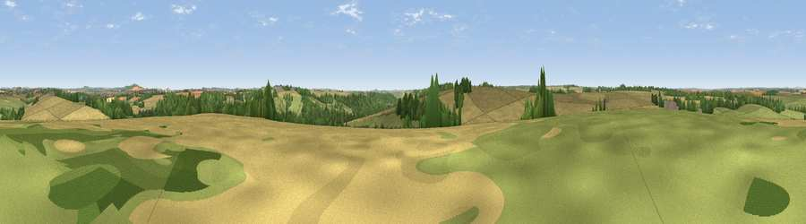

Viewpoint near Upper Woodford
#21032 in England · top 28% of its area beats it · near Upper WoodfordWhere it is
The exact computed spot (SU 12225 38575). Click the marker for map links.
The view, rendered

A 360° render of this exact spot computed from the terrain model, tree cover and land cover — summer colours, afternoon light, calibrated against photographs of famous viewpoints. Real trees, hedges and buildings will differ in detail.
The panorama
Grey silhouette: terrain skyline in each direction (720 bearings, Earth curvature and refraction included). Dashed green: skyline with trees (+15 m) and buildings (+8 m) as obstacles. Blue strip: how far the ground is visible on each bearing.
Where the view opens
Wedge length = distance to the farthest visible ground on that bearing (vegetation-aware). Rings at 10, 25 and 50 km.
What fills the view
55% cropland · 29% grassland · 15% woodland ·
Angular shares of the visible panorama (visual magnitude), not map area. Landscape diversity 0.44 (0–1 Shannon).
Key numbers
More beautiful places nearby
The staircase of upgrades: each row has a higher view potential than everything closer. Driving times are estimates from straight-line distance, calibrated against real road routing — check an actual route before setting out.
| Place | Direction | Drive | Score |
|---|---|---|---|
| Viewpoint near Upper Woodford | SSW · 1 km | ~3 min | 51.2 |
| Smithen Down | SW · 4 km | ~9 min | 56.3 |
| Viewpoint near Bulford | ENE · 8 km | ~15 min | 60.7 |
| Viewpoint near Bulford | ENE · 8 km | ~17 min | 70.3 |
| Viewpoint near Edington | NW · 24 km | ~39 min | 71.9 |
| Viewpoint near Alton Priors | N · 25 km | ~41 min | 72.5 |
| Viewpoint near Oare | NNE · 25 km | ~41 min | 72.9 |
| Monk's Down | SW · 26 km | ~42 min | 74.4 |
51.14631, -1.82661 · source: screening · position refined by local search. Computed location — check access rights before visiting.